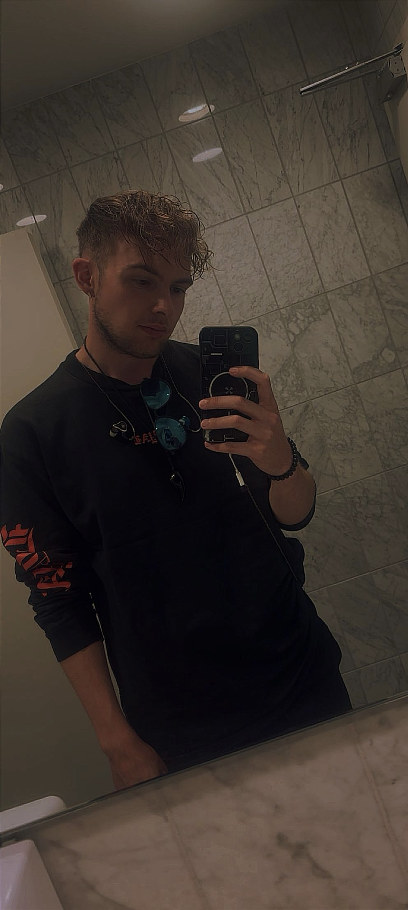

About Me
My name is Gerrit, and I am from the Black Forest. I am currently pursuing an education in Stuttgart as a Media Designer, specializing in digital and print design with a focus on animation and visualization.
My work combines technical understanding with a strong creative approach. For over three years, I have been deeply engaged in 3D design and real-time visualization, working with tools such as Blender and Unreal Engine.
Alongside my studies, I am independently developing my own game project, “Eternal Dread.” Through this project, I bring together my skills in game design, 3D modeling, and visual design. Creativity is not just part of my education, but a core element of my daily work.
Stack
My Projects
Origin & Mission
Eternal Dread
The idea for “Eternal Dread” stems from my deep passion for video games. As a gamer, it has always been my dream not just to immerse myself in foreign worlds, but to become the creator of these worlds myself. My ultimate goal is to be part of the gaming industry and to actively shape the interactive experiences of tomorrow.
Even before starting my training as a Digital and Print Media Designer specializing in Animation and Visualization, I was deeply involved with Blender and Unreal Engine. From the very beginning, my drive was to use my creative spark not just visually, but to develop experiences that combine atmosphere, tension, and technology.
What started as initial experiments evolved into “Eternal Dread” – an atmospheric 1980s zombie wave survival game. I am executing all areas independently: from world building and level design to technical implementation within the engine. Every line of logic and every single mesh is proof of my ambition to master the entire game development pipeline.
“Eternal Dread” is the result of this process... My goal is to push the graphical capabilities of Unreal Engine 5 so consistently that the visual quality can compete with modern AAA productions. Particularly through the use of real-time ray tracing and highly detailed assets, I am creating a level of immersion that goes far beyond a classic indie title.
Through targeted lighting moods and detailed environments, a world is created that completely captivates the player. For me, this project is the decisive step on my journey to gain a foothold in the industry as a Game Designer and turn my dream into reality.